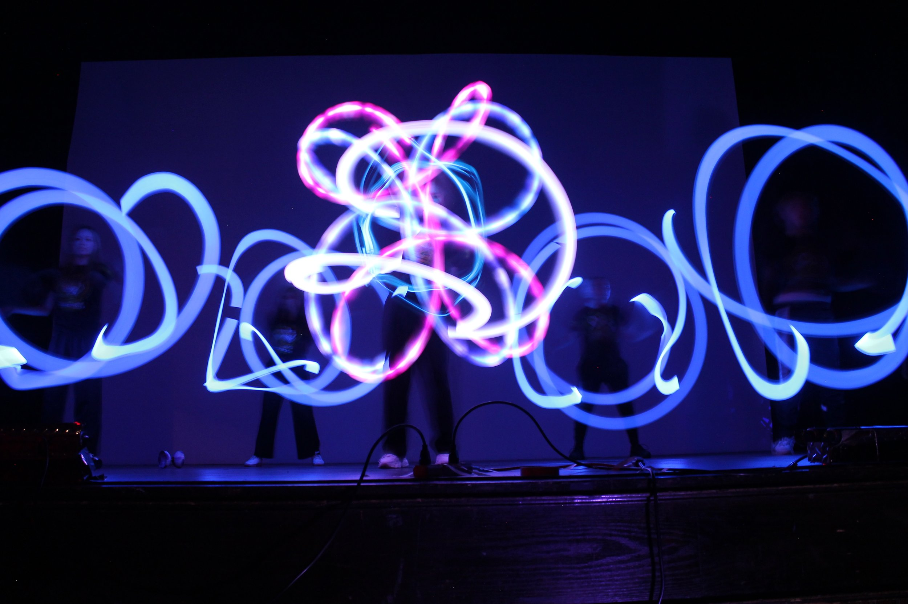

Interests
Photonix
A flow arts and light performance group at the University of Michigan. Using glowsticks as our primary medium, along with LEDs, staffs, and many other props to manipulate light, we create exciting visual art in live shows. We look to amaze audiences with mind-blowing performances around campus, as well as spread flow arts to everyone.
Umich Esports
An organization that oversees the formation and operations of each video game's competitive teams. I am Challenger in League of Legends part of the team that has current University of Michigan students and competes in collegiate level esports competitions across various leagues.
Sports
I have played Soccer my whole life and have been a fan of the German National team and Bayern Munich since 2014. In addition, I have recently picked up Pickleball and have been enjoying it a lot.
Board Games
I love playing board games in my free time and with friends.
Some board games that are my favorites are:
- Dune: Imperium
- Avalon
- Clank!
- Catan